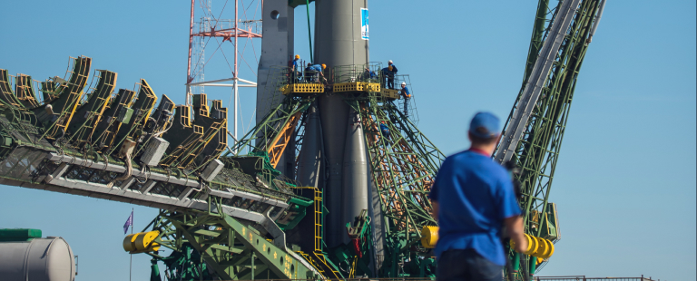
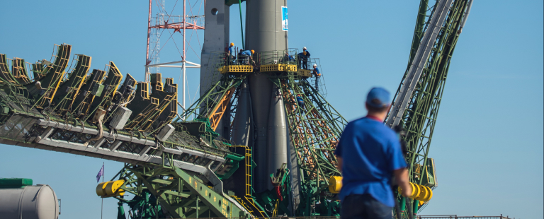
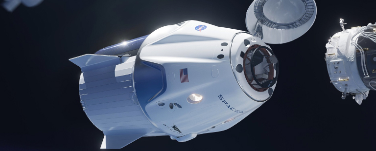
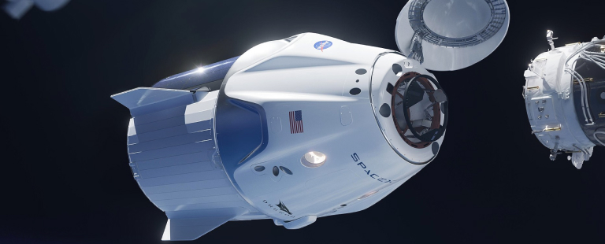

03SPACE LAUNCH 101
The terminology...
LAUNCH VEHICLE
A launch vehicle or carrier rocket is a rocket-propelled vehicle used to carry a payload from Earth's surface to space, usually to Earth orbit or beyond. Our WEB-X carrier rocket is the most powerful in operation. Standing 150 metres tall, it's quite an awe-inspiring sight on the launch pad!

The terminology...
SPACEPORT
A spaceport or cosmodrome is a site for launching (or receiving) spacecraft, by analogy to the seaport for ships or airport for aircraft. Based in the famous Cape Canaveral, our spaceport is ideally situated to take advantage of the Earth’s rotation for launch.
 

The terminology...
SPACE CAPSULE
A space capsule is an often-crewed spacecraft that uses a blunt-body reentry capsule to reenter the Earth's atmosphere without wings. Our capsule is where you'll spend your time during the flight. It includes a space gym, cinema, and plenty of other activities to keep you entertained.
 
